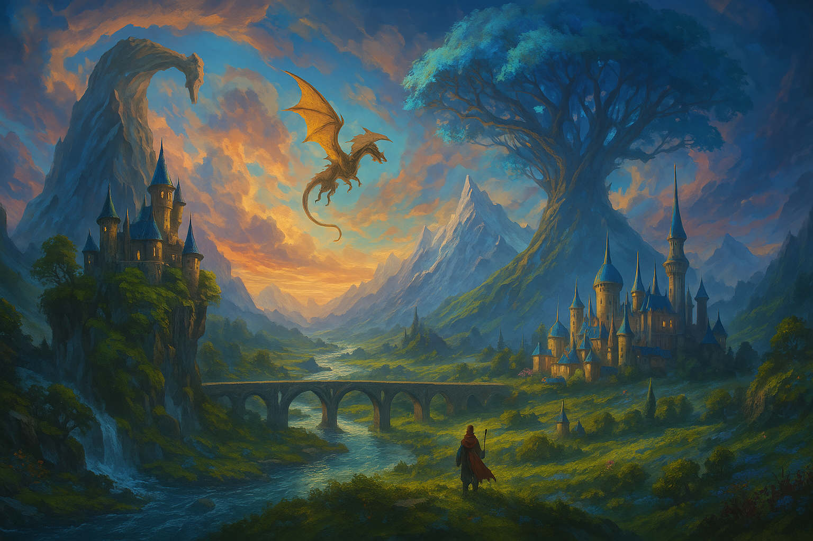

Expert Localization for Your Game Worlds
Bringing your game to the French audience isn't just about translation; it's about adaptation, creativity and preserving the soul of your story. As a professional game translator, I don’t just convert words; I tailor experiences, ensuring French-speaking players all around the world feel every line of dialogue, every lore entry and every mission objective as if it were written just for them.
With over 20 years of experience working on industry-defining titles like Cyberpunk 2077, The Witcher 3 and World of Warcraft, I understand the unique challenges of game localization from cultural nuances, character limits and other technical constraints to accuracy and player immersion.
Whether you're an indie developer looking to reach more players, a major studio launching a global hit or a language service provider seeking an expert translator, I bring the precision, creativity, and technical expertise needed to make your game feel authentic in French.
Beyond linguistic abilities, I can offer technical support (coding error report tool, text rendering tool to check how the text will be displayed, etc.) to improve the translation workflow and the consistency of the assets delivered by a whole team, ensuring efficiency in large-scale projects. From complex branching narratives to ingame localization, I help you craft worlds that speak to each and every player.
Reach out using the contact form if you need a skilled and versatile specialist to bring your game to the French market.